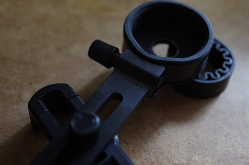
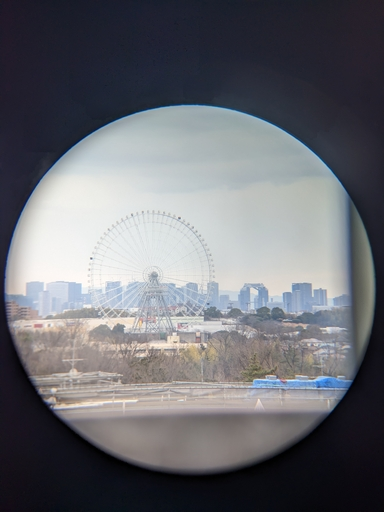
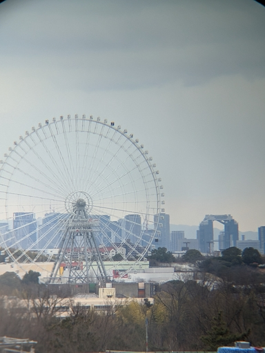
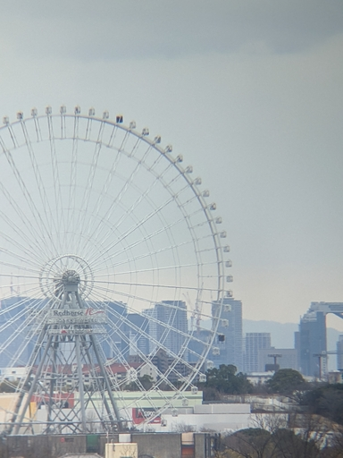

最近双眼鏡・望遠鏡界隈で名前をよく目にするブランド SVBONY のスマスコ用汎用スマートフォン・アダプターが届いたので、三脚アダプターをすでに所有している PENTAX Papilio Ⅱ 8.5x21 に取り付けて Google Pixel 5 で撮ってみた。

接眼レンズに取り付ける L シャーシ ( 丸いカップ部分 ) が 42mm 径クラスの双眼鏡に最適化されているのか直径が大きく Papilio の接眼部に取り付けるには波状になっている S リング追加しないと Papilio を固定できない。

Google Pixel 5 の 1 倍で撮ってみたのが上の写真だ。イメージサークル ( という言い方が正しいのかわからないが以下そう記述する ) の外側まで映り込む。

2 倍までデジタル・ズームすると周辺光量落ちはするがイメージサークル内の画像をおおよそ画面いっぱいに写すことができる。上の写真では若干ケラレが見られるがそれは雑に調整したためであって、丁寧に調整すればイメージサークルの最大長方形が得られるだろう。

3 倍までデジタル・ズームしてみたら調整具合にもよるが双眼鏡のおいしい辺りの画像が得られる。それもでパープルフリンジが見られるけれども、気象条件があまり良くないことと、カメラのレンズではなく双眼鏡で得られる像なので妥協も必要。
それとこの汎用アダプターを使って気がついたのだけれども、双眼鏡の接眼部の見口がツイストアップ式の場合、このアダプターを付けている最中や使っている最中にスマホの重さでツイストアップ見口が回転してしまい、接眼レンズとスマホのレンズとの間の距離が変わってしまうことが多い。
接眼レンズとスマホレンズとの距離が変わると画像の大きさというかズーミングの具合が変化してしまったりするので、これがセットアップ時非常にストレスになる。
取り付け中や取り付け後に接眼見口を回転させることがないような製品のほうが取付時のストレスは少ないかも知れない。
今日は PENTAX Papilio Ⅱ 8.5x21 に取り付けてみたが、明日には KOWA の三脚アダプターが届くので明後日には情報を追加できるかも知れない。